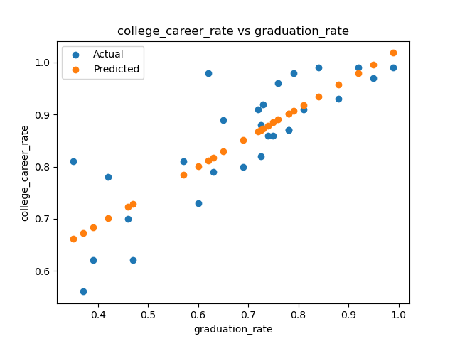

Program 2: School Success. Due noon, Friday, 22 September.
Learning Objective: to build competency with Pandas for storing and cleaning data, use linear models, and introduce catergorical encoding.
Available Libraries: Core Python 3.6+, Pandas.
Data Sources: NYC Open Data: 2021 DOE High School Directory,
2020 DOE High School Directory,
2019 DOE High School Directory.
Sample Datasets: 2021_DOE_High_School_Directory_SI.csv (2021 dataset restricted to Staten Island schools) and
2020_DOE_High_School_Directory_late_start.csv (schools with 9am start times in 2020 dataset).
The second program uses the same DOE school directory datasets as Program 1. Instead of using string and file I/O from core Python, this program uses Pandas to store and manipulate the data. The linear models built in this program are more complex than the simple constant models from the first program. This program follows a similar structure:
Programs are submitted via Gradescope (see general notes above for details) and can only use the libraries specified above (echoing the restrictions of technical screenings).
See Program 1 for the steps needed to download the datasets for testing.
The datasets have a large number (448!) columns:
dbn,school_name,borocode,url,overview_paragraph,diversity_in_admissions,diadetails,school_10th_seats,academicopportunities1,academicopportunities2,academicopportunities3,academicopportunities4,academicopportunities5,academicopportunities6,ell_programs,language_classes,advancedplacement_courses,diplomaendorsements,neighborhood,shared_space,campus_name,building_code,location,phone_number,fax_number,school_email,website,recruitment_website,sqr_website,subway,bus,gradespan,finalgrades,total_students,freshmanschedule,start_time,end_time,addtl_info1,extracurricular_activities,psal_sports_boys,psal_sports_girls,psal_sports_coed,school_sports,graduation_rate,pct_stu_safe,attendance_rate,pct_stu_enough_variety,college_career_rate,girls,boys,pbat,international,specialized,transfer,ptech,earlycollege,school_accessibility_description,program1,program2,program3,program4,program5,program6,program7,program8,program9,program10,program11,program12,interest1,interest2,interest3,interest4,interest5,interest6,interest7,interest8,interest9,interest10,interest11,interest12,prgdesc1,prgdesc2,prgdesc3,prgdesc4,prgdesc5,prgdesc6,prgdesc7,prgdesc8,prgdesc9,prgdesc10,prgdesc11,prgdesc12,common_audition1,common_audition2,common_audition3,common_audition4,common_audition5,common_audition6,common_audition7,common_audition8,common_audition9,common_audition10,common_audition11,common_audition12,auditioninformation1,auditioninformation2,auditioninformation3,auditioninformation4,auditioninformation5,auditioninformation6,auditioninformation7,auditioninformation8,auditioninformation9,auditioninformation10,auditioninformation11,auditioninformation12,seats9ge1,seats9ge2,seats9ge3,seats9ge4,seats9ge5,seats9ge6,seats9ge7,seats9ge8,seats9ge9,seats9ge10,seats9ge11,seats9ge12,grade9geapplicants1,grade9geapplicantsperseat1,grade9geapplicants2,grade9geapplicantsperseat2,grade9geapplicants3,grade9geapplicantsperseat3,grade9geapplicants4,grade9geapplicantsperseat4,grade9geapplicants5,grade9geapplicantsperseat5,grade9geapplicants6,grade9geapplicantsperseat6,grade9geapplicants7,grade9geapplicantsperseat7,grade9geapplicants8,grade9geapplicantsperseat8,grade9geapplicants9,grade9geapplicantsperseat9,grade9geapplicants10,grade9geapplicantsperseat10,grade9geapplicants11,grade9geapplicantsperseat11,grade9geapplicants12,grade9geapplicantsperseat12,grade9gefilledflag1,grade9gefilledflag2,grade9gefilledflag3,grade9gefilledflag4,grade9gefilledflag5,grade9gefilledflag6,grade9gefilledflag7,grade9gefilledflag8,grade9gefilledflag9,grade9gefilledflag10,grade9gefilledflag11,grade9gefilledflag12,seats9swd1,seats9swd2,seats9swd3,seats9swd4,seats9swd5,seats9swd6,seats9swd7,seats9swd8,seats9swd9,seats9swd10,seats9swd11,seats9swd12,grade9swdapplicants1,grade9swdapplicantsperseat1,grade9swdapplicants2,grade9swdapplicantsperseat2,grade9swdapplicants3,grade9swdapplicantsperseat3,grade9swdapplicants4,grade9swdapplicantsperseat4,grade9swdapplicants5,grade9swdapplicantsperseat5,grade9swdapplicants6,grade9swdapplicantsperseat6,grade9swdapplicants7,grade9swdapplicantsperseat7,grade9swdapplicants8,grade9swdapplicantsperseat8,grade9swdapplicants9,grade9swdapplicantsperseat9,grade9swdapplicants10,grade9swdapplicantsperseat10,grade9swdapplicants11,grade9swdapplicantsperseat11,grade9swdapplicants12,grade9swdapplicantsperseat12,grade9swdfilledflag1,grade9swdfilledflag2,grade9swdfilledflag3,grade9swdfilledflag4,grade9swdfilledflag5,grade9swdfilledflag6,grade9swdfilledflag7,grade9swdfilledflag8,grade9swdfilledflag9,grade9swdfilledflag10,grade9swdfilledflag11,grade9swdfilledflag12,seats1specialized,seats2specialized,seats3specialized,seats4specialized,seats5specialized,seats6specialized,applicants1specialized,applicants2specialized,applicants3specialized,applicants4specialized,applicants5specialized,applicants6specialized,appperseat1specialized,appperseat2specialized,appperseat3specialized,appperseat4specialized,appperseat5specialized,appperseat6specialized,seats101,seats102,seats103,seats104,seats105,seats106,seats107,seats108,seats109,seats1010,seats1011,seats1012,eligibility1,eligibility2,eligibility3,eligibility4,eligibility5,eligibility6,eligibility7,eligibility8,eligibility9,eligibility10,eligibility11,eligibility12,admissionspriority11,admissionspriority21,admissionspriority31,admissionspriority41,admissionspriority12,admissionspriority22,admissionspriority32,admissionspriority42,admissionspriority13,admissionspriority23,admissionspriority33,admissionspriority43,admissionspriority14,admissionspriority24,admissionspriority34,admissionspriority44,admissionspriority15,admissionspriority25,admissionspriority35,admissionspriority45,admissionspriority16,admissionspriority26,admissionspriority36,admissionspriority46,admissionspriority17,admissionspriority27,admissionspriority37,admissionspriority47,admissionspriority18,admissionspriority28,admissionspriority38,admissionspriority48,admissionspriority19,admissionspriority29,admissionspriority39,admissionspriority49,admissionspriority110,admissionspriority210,admissionspriority310,admissionspriority410,admissionspriority111,admissionspriority211,admissionspriority311,admissionspriority411,admissionspriority112,admissionspriority212,admissionspriority312,admissionspriority412,offer_rate1_1,offer_rate2_1,offer_rate3_1,offer_rate4_1,offer_rate1_2,offer_rate2_2,offer_rate3_2,offer_rate4_2,offer_rate1_3,offer_rate2_3,offer_rate3_3,offer_rate4_3,offer_rate1_4,offer_rate2_4,offer_rate3_4,offer_rate4_4,offer_rate1_5,offer_rate2_5,offer_rate3_5,offer_rate4_5,offer_rate1_6,offer_rate2_6,offer_rate3_6,offer_rate4_6,offer_rate1_7,offer_rate2_7,offer_rate3_7,offer_rate4_7,offer_rate1_8,offer_rate2_8,offer_rate3_8,offer_rate4_8,offer_rate1_9,offer_rate2_9,offer_rate3_9,offer_rate4_9,offer_rate1_10,offer_rate2_10,offer_rate3_10,offer_rate4_10,offer_rate1_11,offer_rate2_11,offer_rate3_11,offer_rate4_11,offer_rate1_12,offer_rate2_12,offer_rate3_12,offer_rate4_12,requirement_1_1,requirement_2_1,requirement_3_1,requirement_4_1,requirement_5_1,requirement_1_2,requirement_2_2,requirement_3_2,requirement_4_2,requirement_5_2,requirement_1_3,requirement_2_3,requirement_3_3,requirement_4_3,requirement_5_3,requirement_1_4,requirement_2_4,requirement_3_4,requirement_4_4,requirement_5_4,requirement_1_5,requirement_2_5,requirement_3_5,requirement_4_5,requirement_5_5,requirement_1_6,requirement_2_6,requirement_3_6,requirement_4_6,requirement_5_6,requirement_1_7,requirement_2_7,requirement_3_7,requirement_4_7,requirement_5_7,requirement_1_8,requirement_2_8,requirement_3_8,requirement_4_8,requirement_5_8,requirement_1_9,requirement_2_9,requirement_3_9,requirement_4_9,requirement_5_9,requirement_1_10,requirement_2_10,requirement_3_10,requirement_4_10,requirement_5_10,requirement_1_11,requirement_2_11,requirement_3_11,requirement_4_11,requirement_5_11,requirement_1_12,requirement_2_12,requirement_3_12,requirement_4_12,requirement_5_12,code1,method1,code2,method2,code3,method3,code4,method4,code5,method5,code6,method6,code7,method7,code8,method8,code9,method9,code10,method10,code11,method11,code12,method12,primary_address_line_1,city,postcode,state_code,Borough,Latitude,Longitude,Community Board,Council District,Census Tract,BIN,BBL,NTA
For this assignment, we are going to focus on a subset of these columns, listed below.
Note: for this assignment, we are using native Python libraries and the data cleaning library Pandas. See Lectures 2 and 3 and the Resources page for more details on using Pandas.
Make sure you have downloaded some test data sets to your device. Start a .py file that contains your introductory comment (see General Notes above for format). The next step is to format the data for analysis. Add the following to your file, testing as you go:
import_data(file_name):
This function takes as one input parameter:
file_name: the name of a CSV file containing 2021 DOE High School Directory from OpenData NYC.
dbn,school_name,NTA,graduation_rate,pct_stu_safe,attendance_rate,college_career_rate,language_classes,advancedplacement_courses,method1,overview_paragraphgraduation rate are dropped. impute_numeric_cols(df):
This function takes one input:
df: a DataFrame containing DOE High School from OpenData NYC.
['pct_stu_safe','attendance_rate', 'college_career_rate'] are replaced with the median of the respective column. compute_count_col(df,col):
This function takes two inputs:
df: a DataFrame containing DOE High School from OpenData NYC.
col: a column name in df that contains a list of items separated by commas.
df[col].encode_categorical_col(col):
This function takes one input parameter:
col: a column of categorical data.
Mandarin, French, Arabic, Spanish, then the resulting columns would be labeled with those languages and sorted: Arabic, French, Mandarin, Spanish.
split_test_train(df, xes_col_names, y_col_name,
frac=0.25, random_state=922):
This function takes 5 input parameters:
df: a DataFramey_col_name: the name of the column of the dependent variable.xes_col_names: a list of columns that contain the independent variables.frac: accepts a float between 0 and 1 and represents the proportion of the data set to use for training. This parameter has a default value of 0.25.random_state: Used as a seed to the randomization. This parameter has a default value of 922.df_test using panda's sample function to create a test set with frac of the rows and random_state for the random seed.df and call it df_train.df_test from df_train (e.g. df_train = df_train.drop(df_test.index)) df_train[xes_col_names],df_test[xes_col_names],df_train[y_col_name],df_test[y_col_name].For example, starting with the Staten Island data set:
file_name = 'fall23/program02/2021_DOE_High_School_Directory_SI.csv'
df = import_data(file_name)
print(f'There are {len(df.columns)} columns:')
print(df.columns)
print('The dataframe is:')
print(df)There are 11 columns:
Index(['dbn', 'school_name', 'NTA', 'graduation_rate', 'pct_stu_safe',
'attendance_rate', 'college_career_rate', 'language_classes',
'advancedplacement_courses', 'method1', 'overview_paragraph'],
dtype='object')
The dataframe is:
dbn school_name ... method1 overview_paragraph
1 31R047 CSI High School for International Studies ... Open Our challenging and academically demanding pro...
2 31R064 Gaynor McCown Expeditionary Learning School ... Ed. Opt. McCown is a college preparatory school partner...
3 31R080 Michael J. Petrides School, The ... Ed. Opt. Petrides is a comprehensive college preparator...
4 31R440 New Dorp High School ... Ed. Opt. New Dorp High School is a comprehensive high s...
5 31R445 Port Richmond High School ... Screened Port Richmond High School is a comprehensive C...
6 31R450 Curtis High School ... Open Curtis High School is a Community School whose...
7 31R455 Tottenville High School ... Ed. Opt. Tottenville High School has long been recogniz...
8 31R460 Susan E. Wagner High School ... Screened Susan E. Wagner High School consists of 16 uni...
9 31R600 Ralph R. McKee Career and Technical Education ... ... Ed. Opt. McKee prepares you for college, career, and li...
10 31R605 Staten Island Technical High School ... Test SI Technical High School provides a robust lib...
[10 rows x 11 columns]Note that there are 11 high schools in Staten Island, but one (Eagle Academy) was new and didn't have a graduation rate, so, was dropped.
Looking at the schools who start after 9am:
file_name = 'fall23/program02/2020_DOE_High_School_Directory_late_start.csv'
df_late = import_data(file_name)
print('The numerical columns are:')
print(df_late[ ['dbn','pct_stu_safe','attendance_rate','college_career_rate'] ])
The numerical columns are:
dbn pct_stu_safe attendance_rate college_career_rate
0 01M696 0.92 0.95 0.92
1 07X334 0.89 0.90 0.35
2 02M543 0.92 0.84 0.75
3 14K685 0.94 0.83 0.42
4 02M546 0.80 0.90 0.78
5 02M376 0.97 0.93 0.79
6 19K404 0.87 0.86 0.74
7 20K490 0.80 0.90 0.57
9 27Q334 0.92 0.83 NaN
10 30Q301 0.94 0.93 0.84
11 28Q328 0.87 0.87 0.88
12 14K561 0.94 0.89 0.76
13 31R450 0.76 0.85 0.60
14 02M298 0.89 0.87 0.65
15 04M555 0.97 0.95 0.95
16 10X353 0.95 0.88 0.69
17 02M420 0.90 0.91 0.73
18 10X351 0.83 0.76 0.39
19 20K445 0.75 0.86 0.63
20 21K337 0.90 0.90 0.46
21 18K633 0.92 0.89 0.81
22 23K514 0.88 0.82 0.37
23 02M294 0.89 0.87 0.78
24 30Q575 0.86 0.93 0.62
26 28Q440 0.77 0.90 0.72
27 24Q299 0.97 0.98 0.99
28 16K765 0.87 0.72 NaN
29 09X403 0.89 0.83 0.47college_career_rate. We will fill those in (impute) with the median of the column:
df_late = impute_numeric_cols(df_late)
print(df_late[ ['dbn','pct_stu_safe','attendance_rate','college_career_rate'] ])
dbn pct_stu_safe attendance_rate college_career_rate
0 01M696 0.92 0.95 0.920
1 07X334 0.89 0.90 0.350
2 02M543 0.92 0.84 0.750
3 14K685 0.94 0.83 0.420
4 02M546 0.80 0.90 0.780
5 02M376 0.97 0.93 0.790
6 19K404 0.87 0.86 0.740
7 20K490 0.80 0.90 0.570
9 27Q334 0.92 0.83 0.725
10 30Q301 0.94 0.93 0.840
11 28Q328 0.87 0.87 0.880
12 14K561 0.94 0.89 0.760
13 31R450 0.76 0.85 0.600
14 02M298 0.89 0.87 0.650
15 04M555 0.97 0.95 0.950
16 10X353 0.95 0.88 0.690
17 02M420 0.90 0.91 0.730
18 10X351 0.83 0.76 0.390
19 20K445 0.75 0.86 0.630
20 21K337 0.90 0.90 0.460
21 18K633 0.92 0.89 0.810
22 23K514 0.88 0.82 0.370
23 02M294 0.89 0.87 0.780
24 30Q575 0.86 0.93 0.620
26 28Q440 0.77 0.90 0.720
27 24Q299 0.97 0.98 0.990
28 16K765 0.87 0.72 0.725
29 09X403 0.89 0.83 0.470
Using the compute_count_col twice, let's add in counts for languages & AP classes:
df_late['language_count'] = compute_count_col(df_late,'language_classes')
df_late['ap_count'] = compute_count_col(df_late,'advancedplacement_courses')
print('High schools that have 9am or later start:')
print(df_late[ ['dbn','language_count','language_classes','ap_count','advancedplacement_courses'] ])
High schools that have 9am or later start:
dbn language_count language_classes ap_count advancedplacement_courses
0 01M696 5 French, Greek, Latin, Mandarin, Spanish 0 NaN
1 07X334 1 French 0 NaN
2 02M543 1 Spanish 2 AP English Literature and Composition, AP Unit...
3 14K685 1 Spanish 0 NaN
4 02M546 1 Spanish 6 AP Biology, AP Calculus AB, AP Computer Scienc...
5 02M376 1 Spanish 4 AP Calculus AB, AP English Language and Compos...
6 19K404 1 Spanish 5 AP Biology, AP Computer Science A, AP English ...
7 20K490 6 Arabic, French, Greek, Italian, Mandarin, Spanish 20 AP 2-D Art and Design, AP Biology, AP Calculus...
9 27Q334 1 Spanish 6 AP Biology, AP Computer Science Principles, AP...
10 30Q301 1 French 6 AP Calculus AB, AP Computer Science Principles...
11 28Q328 2 French, Spanish 5 AP Biology, AP Calculus AB, AP Chemistry, AP C...
12 14K561 2 American Sign Language, Spanish 7 AP Calculus AB, AP English Language and Compos...
13 31R450 3 French, Italian, Spanish 10 AP Calculus AB, AP Computer Science Principles...
14 02M298 1 Spanish 5 AP Biology, AP Calculus AB, AP English Languag...
15 04M555 1 Spanish 7 AP Calculus AB, AP Computer Science Principles...
16 10X353 4 French, German, Japanese, Spanish 6 AP English Language and Composition, AP Englis...
17 02M420 1 Spanish 12 AP Art History, AP Biology, AP Calculus AB, AP...
18 10X351 2 Japanese, Spanish 1 AP Seminar
19 20K445 4 Arabic, Italian, Mandarin, Spanish 22 AP Biology, AP Calculus AB, AP Calculus BC, AP...
20 21K337 2 Mandarin, Spanish 0 NaN
21 18K633 1 Spanish 6 AP Biology, AP English Literature and Composit...
22 23K514 2 French, Spanish 4 AP Chemistry, AP English Language and Composit...
23 02M294 2 French, Spanish 0 NaN
24 30Q575 2 French, Spanish 10 AP Calculus AB, AP Calculus BC, AP English Lan...
26 28Q440 7 American Sign Language, French, Hebrew, Italia... 19 AP Art History, AP Biology, AP Calculus AB, AP...
27 24Q299 3 Latin, Mandarin, Spanish 0 NaN
28 16K765 1 Spanish 3 AP Biology, AP English Literature and Composit...
29 09X403 2 French, Spanish 3 AP Calculus AB, AP French Language and Culture...Continuing our example, we can add columns for the languages available, using one hot encoding:
df_langs = encode_categorical_col(df_si['language_classes'])
print(df_langs)
print(f'Number of schools for each language:')
print(df_langs.sum(axis=0)) Italian Latin Mandarin Spanish American Sign Language French Italian Mandarin Russian Spanish
1 0 0 0 1 0 0 0 1 0 0
2 0 0 0 0 0 0 0 0 0 1
3 0 0 0 1 0 0 1 0 0 0
4 0 0 0 1 0 0 1 0 0 0
5 0 0 0 1 0 0 1 0 0 0
6 1 0 0 1 0 1 0 0 0 0
7 1 0 1 1 1 0 0 0 0 0
8 1 1 0 1 0 1 0 0 0 0
9 0 0 0 0 0 0 0 0 0 1
10 0 0 0 0 0 0 0 0 1 0
Number of schools for each language:
Italian 3
Latin 1
Mandarin 1
Spanish 7
American Sign Language 1
French 2
Italian 3
Mandarin 1
Russian 1
Spanish 2To validate our models, we will randomly split the dataset into training and testing sets:
xes_cols = ['language_count','ap_count','pct_stu_safe','attendance_rate','college_career_rate']
y_col = 'graduation_rate'
x_train, x_test, y_train, y_test = split_test_train(df_late,xes_cols,y_col)
print(f'The sizes of the sets are:')
print(f'x_train has {len(x_train)} rows.\tx_test has {len(x_test)} rows.')
print(f'y_train has {len(y_train)} rows.\ty_test has {len(y_test)} rows.')
x_train has 21 rows. x_test has 7 rows.
y_train has 21 rows. y_test has 7 rows.Once you have written your function, test it locally on the small test files. When it works, upload to Gradescope. Given the size of the files that we evaluate your code, you will find it much faster to develop and test the code in your IDE than debugging and testing in Gradescope.
Last program, we built constant models which predicts the same (constant) values for all inputs. For this program, we are building models that vary their output, based on the input. Our first models will be linear regression models where we find the line that best fits (using least square) the data. Chapter 15 sets a good foundation for this and includes many examples.
We will first implement the linear regression for a single independent (explanatory) variable and a dependent (outcome) variable using only Pandas (our next assigment we will use build more complex models and use packages that have implemented them).
compute_lin_reg(xes, yes):
This function takes two inputs:
xes: an iterables of numeric values
representing the independent variableyes: an iterables of numeric values
representing the dependent variablexes and yes. Call these sd_x and sd_y.
r, of the xes and yes.
theta_1, as theta_1 = r*sd_y/sd_x.
theta_0, as theta_0 = average(yes) - theta_1 * average(xes)
theta_0 and theta_1.
Continuing our example for the late start high schools:
coeff = {}
for col in xes_cols:
coeff[col] = compute_lin_reg(x_train[col],y_train)
print(f'for {col}, theta_0 = {coeff[col][0]} and theta_1 = {coeff[col][1]}')
for language_count, theta_0 = 0.821969696969697 and theta_1 = 0.008721590909090911
for ap_count, theta_0 = 0.829236532747707 and theta_1 = 0.0021805968221160063
for pct_stu_safe, theta_0 = 0.3259265268281375 and theta_1 = 0.5869741569127364
for attendance_rate, theta_0 = -0.4082696527688132 and theta_1 = 1.4385568607202786
for college_career_rate, theta_0 = 0.4664578537197913 and theta_1 = 0.5575944180964911
The next part of program evaluates how well our linear models do at prediction. We will use a loss function, mean squared error and rooted mean squared error, introduced in Lecture 1 and Section 4.2.
predict(xes, theta_0, theta_1):
This function takes three inputs:
xes: an iterables of numeric values
representing the independent variabletheta_0: the y-intercept of the linear regression modeltheta_1: the slope of the linear regression modelxes, under the linear regression model with y-intercept theta_0 and slope theta_1.
mse_loss(y_actual,y_estimate):
This function takes two inputs:
y_actual: a Series containing numeric values.
y_estimate: a Series containing numeric values.
y_actual and y_estimate (e.g. the mean of the squares of the differences).
rmse_loss(y_actual,y_estimate):
This function takes two inputs:
y_actual: a Series containing numeric values.
y_estimate: a Series containing numeric values.
y_actual and y_estimate (e.g. the square root of the mean of the squares of the differences).compute_error(y_actual,y_estimate,loss_fnc=mse_loss):
This function takes three inputs:
y_actual: a Series containing numeric values.
y_estimate: a Series containing numeric values.
loss_fnc: function that takes two numeric series as input parameters and returns a numeric value. It has a default value of mse_loss.
loss_fnc on the inputs y_actual and
y_estimate is returned.Continuing our example of number of sentences in an overview:
coeff = {}
for col in xes_cols:
coe = compute_lin_reg(x_train[col],y_train)
coeff[col] = coe
print(f'for {col}, theta_0 = {coe[0]} and theta_1 = {coe[1]}')for language_count, theta_0 = 0.821969696969697 and theta_1 = 0.008721590909090911
for ap_count, theta_0 = 0.829236532747707 and theta_1 = 0.0021805968221160063
for pct_stu_safe, theta_0 = 0.3259265268281375 and theta_1 = 0.5869741569127364
for attendance_rate, theta_0 = -0.4082696527688132 and theta_1 = 1.4385568607202786
for college_career_rate, theta_0 = 0.4664578537197913 and theta_1 = 0.5575944180964911Lets see which explanatory variable did best on the testing data:
predicts = {}
errors = {}
min_error = 1
best = ""
for col in xes_cols:
predicts[col] = predict(x_test[col], coe[0], coe[1])
errors[col] = compute_error(y_test,predicts[col])
print(f'Error on test data for {col} is {errors[col]}.')
if errors[col] < min_error:
min_error = errors[col]
best = col
print(f'Column {col} has lowest error ({min_error}).')Error on test data for language_count is 1.4074577840833737.
Error on test data for ap_count is 21.589341577894185.
Error on test data for pct_stu_safe is 0.014732620032972344.
Error on test data for attendance_rate is 0.015958758340922953.
Error on test data for college_career_rate is 0.0016245415203027973.
Column college_career_rate has lowest error (0.0016245415203027973).The smallest losses are for college_career_rate, so, let's graph that to visualize the difference between the actual and predicted data. We first build a helper function to use for graphing.
import matplotlib.pyplot as plt
import seaborn as sns
def graph_data(df, col, coeff):
"""
Function to graph the models
"""
plt.scatter(df[col],df['graduation_rate'],label='Actual')
predict_grad = predict(df_late[col],coeff[col][0],coeff[col][1])
plt.scatter(df[col], predict_grad,label='Predicted')
plt.title(f'{col} vs graduation_rate')
plt.xlabel('graduation_rate')
plt.ylabel(f'{col}')
plt.legend()
plt.show()
graph_data(df_late, 'college_career_rate',coeff)
Each programming assignment includes functions that test that your code works (a "test suite"). We will first build these in core Python, and in future assignments (Programs 3-6), will introduce standard testing packages.
Your program should include the functions below that test if your functions above perform correctly. Each of these functions takes a function as an argument. You can write them in any order, but we have placed them easiest to hardest below:
test_compute_count_col(compute_fnc=compute_count_col):
This test function takes one input:
compute_fnc: a function that takes two input parameters (a DataFrame and the name of a categorical column) and returns a Series. It has a default value of compute_count_col.compute_fnc returning True if the compute_fnc performs correctly (e.g. computes the the count column) and False otherwise.
Hint: we will test your function with three different functions: the correct one, one that returns the column, and one that always returns a DataFrame with the 3 specified columns having the same entry (42) for all rows.
test_predict(predict_fnc=predict):
This test function takes one input:
predict_fnc: a function that takes three input parameters (a Series and two numerics) and returns a Series. It has a default value of predict.predict_fnc returning True if the predict_fnc performs correctly (e.g. predicts the correct values) and False otherwise.
Hint: we will test your function with three different functions: the correct one, one that returns the Series unchanged, and one that always returns a Series with the same entry (42) for all rows.
test_mse_loss(loss_fnc=mse_loss):
This test function takes one input:
loss_fnc: a function that takes three input parameter (two Series) and returns a numeric. It has a default value of mse_loss.loss_fnc returning True if the loss_fnc performs correctly (e.g. compute MSA) and False otherwise.
Hint: we will test your function with three different functions: the correct one, one that always uses mean absolute error as its loss function, and one that always returns 42.
Trying first on the correct function:
print(f'test_compute_count_col(compute_count_col) returns {test_compute_count_col(compute_count_col)}.')test_compute_count_col(compute_count_col) returns True.Continuing our example with a function that returns the input columns values (instead of counts):
def same(df,col):
return df[col]
print(f'test_compute_count_col(same) returns {test_compute_count_col(same)}.')test_compute_count_col(same) returns False.